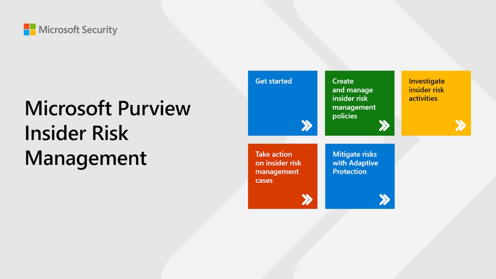

DIRECT LINK: Microsoft Purview Insider Risk Management
Client
Microsoft Customer Acceleration Team
Project Outcome
This demo portal provides interactive guides that make it easy for technical decision makers in the security and compliance space to walk through the product experience and learn about key capabilities and best practices for deployment.
Project Background
We were contracted by the Microsoft Customer Acceleration Team to create a demo series they could promote on social media and resource sites highlighting Microsoft Purview Insider Risk Management product capabilities and best practices.
Collaboration and Planning Process
I collaborated with our technical program manager and content manager to determine needed demo image editing and the scripting style for the project.
KEY INDIVIDUAL CONTRIBUTIONS
- Wrote and peer-edited demo scripts
- Edited demo screenshots
- Generated AI audio voiceover
- Finalized production of interactive content for upload and delivery
TOOLS
Photoshop, Audacity, Microsoft 365, ElevenLabs, DemoMate (in-house demo creation software)
STYLE GUIDES AND LEGAL RESOURCES
Microsoft Writing Style Guide, Microsoft Brand Central, Microsoft CELA (Corporate, External, and Legal Affairs) documentation